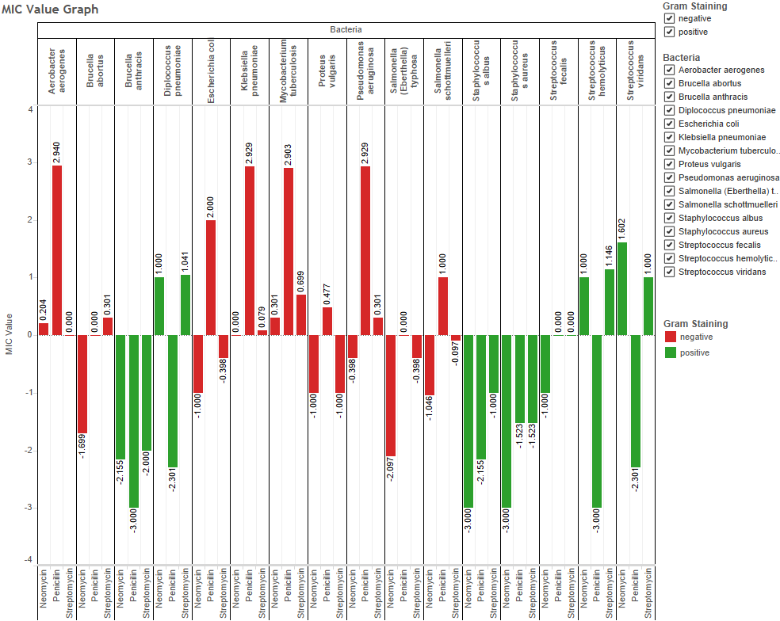

<<<<<<< HEAD
Presented data from 1882 to 2015- Entire history of Ashes.
Captured and cleaned data to accommodate requirements.
First graph shows top Batsman performance from both the teams, second shows the team results of all the series and the
third one shows how top Bowlers have performed over the years.
Using Tableau's hover-on feature, user can identify crucial statistics such as average, number of matches played etc.
User can apply custom filters on teams, players and results to view data as required.
Results- Australia: 134, England: 99, Drawn: 88.
Top Batsman- Sir Don Bradman for Australia, JB Hobbs for England.
Top Bowler- Shane Warne for Australia, Ian Botham for England.
The Visualization created in Tableau shows how Australia and England players have performed in the historic Ashes Test Series.
Inferences
Antibiotic MIC Visualization Design

The visualization above presents the log MIC value for 3 drugs namely Neomycin, Penicillin and Streptomycin plotted against a list of Bacteria. The color on the graph shows the gram staining value.
>
>>>>>>> origin/master